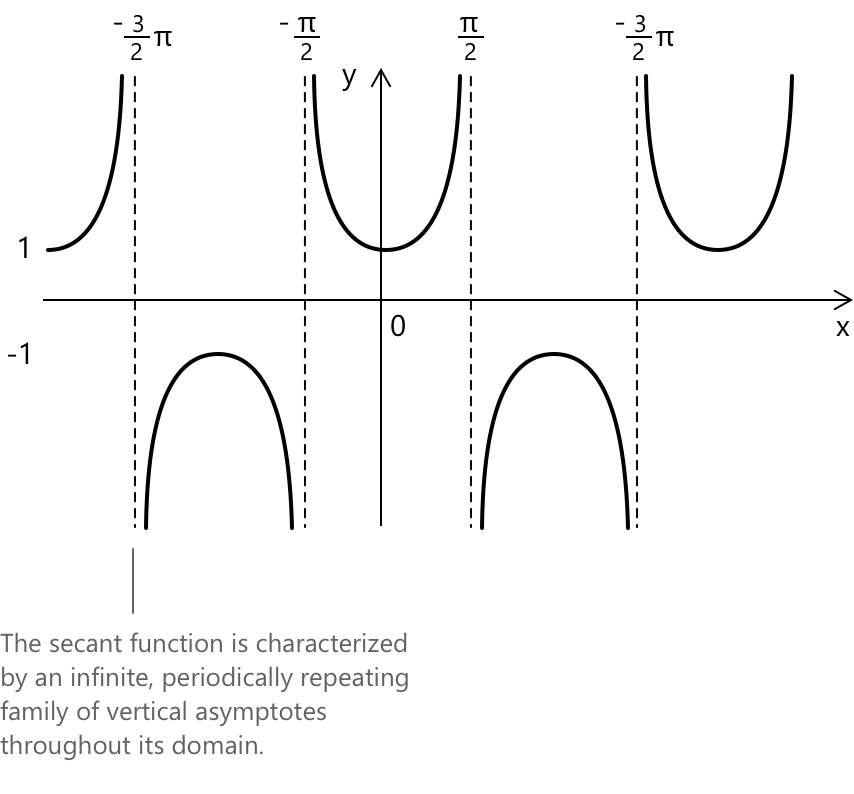

Функція секанса
Функція секанс
Функція секанс \(f(x) = \sec(x)\) визначається як обернена до функції косинус. Для будь-якого дійсного кута \(x\) (виміряного в радіанах), секанс набуває значення:
\[ \sec(x) = \frac{1}{\cos(x)} \]
за умови, що \(\cos(x) \neq 0\). Цей обернений зв'язок означає, що поведінка функції секанс повністю визначається властивостями функції косинус.
Цей розділ зосереджений на аналітичних властивостях функції секанс. Для геометричної інтерпретації на основі одиничного кола, включаючи те, як секанс виникає з продовження радіуса та відповідної побудови прямокутного трикутника, див. відповідну статтю.
Її графік є періодичною кривою з періодом \(2\pi\). Оскільки косинус досягає значення нуля в ізольованих і рівномірно розташованих точках, функція секанс має вертикальні асимптоти в точках:
\[ x = \frac{\pi}{2} + k\pi \qquad k \in \mathbb{Z} \]
де обернена величина \(1/\cos(x)\) стає невизначеною.

Ці асимптоти розділяють графік на окремі гілки, на яких функція необмежено зростає, коли кут наближається до будь-якої з цих точок. Область визначення \(\sec(x)\) таким чином є множиною всіх дійсних чисел, за винятком точок, де \(\cos(x)=0\). Її область значень складається з необмежених проміжків \((-\infty, -1] \cup [1, \infty)\), що відображає той факт, що функція косинус ніколи не набуває значень, абсолютна величина яких перевищує \(1\), через що її обернена величина завжди більша або дорівнює 1 за модулем.
Ключові властивості
- Область визначення: \( { x \in \mathbb{R} : \cos(x) \neq 0 } = { x \in \mathbb{R} : x \neq \pi/2 + k\pi \text{ для всіх } k \in \mathbb{Z} } .\)
- Область значень: \( y \in (-\infty, -1] \cup [1, \infty) .\)
- Періодичність: періодична за \( x \) з періодом \( 2\pi .\)
- Парність: парна, \( \sec(-x) = \sec(x) .\)
- Графік має вертикальні асимптоти в точках \( x = \frac{\pi}{2} + k\pi .\)
Додаткова тотожність
Існує простий, але важливий зв'язок, що пов'язує секанс і тангенс. Виходячи з піфагорової тотожності для синуса і косинуса та переписуючи все через косинус, ми отримаємо:
\[ \sec^{2}(x) = 1 + \tan^{2}(x) \]
Ця тотожність показує, наскільки тісно пов'язані ці дві функції: коли тангенс стає великим, секанс також зростає, і обидві функції мають однакові вертикальні асимптоти. Це зручний зв'язок, який часто зустрічається в математичному аналізі, особливо при роботі з похідними, інтегралами або тригонометричними рівняннями, що містять обернені функції.
Границі, похідні та інтеграли функції секанс
Кілька granic допомагають проілюструвати, як функція секанс поводиться біля ключових точок своєї області визначення. Коли кут наближається до значень, де косинус близький до одиниці, секанс залишається обмеженим і наближається до скінченного значення. Коли кут наближається до тих точок, у яких косинус прагне до нуля, обернена величина зростає без обмеження, що призводить до появи вертикальних асимптот, характерних для цієї функції. Цю поведінку можна узагальнити за допомогою наступних granic:
\[1. \quad \lim_{x \to 0} \sec(x) = 1\] \[2. \quad \lim_{x \to \frac{\pi}{2}^-} \sec(x) = +\infty\] \[3. \quad \lim_{x \to \frac{\pi}{2}^+} \sec(x) = -\infty\]
Функція секанс є неперервною та диференційовною в кожній точці, де вона визначена, тобто на всій дійсній прямій, за винятком кутів, де функція косинус перетворюється на нуль. У цій області визначення вона змінюється плавно, а швидкість її зміни випливає з диференціювання оберненої величини до косинуса. Використання стандартних правил диференціювання дає похідну:
\[ 4. \quad \frac{d}{dx}\sec(x) = \sec(x)\tan(x) \]
що виражає, як функція секанс зростає або спадає залежно від спільної поведінки \(\sec(x)\) та \(\tan(x)\) у кожній точці її області визначення.
Первісну функції секанс можна отримати за допомогою класичної заміни, яка переписує підінтегральний вираз у формі, що підходить для логарифмічного інтегрування. Ця процедура призводить до компактного виразу, що включає як функції секанс, так і тангенс. Результатом є наступний невизначений інтеграл:
\[ 5. \int \sec(x)\, dx = \ln\!\left|\, \sec(x) + \tan(x) \,\right| + c \]
Вичерпний огляд тригонометричних інтегралів, разом із найкориснішими методами перетворення та заміни для обробки складніших випадків, доступний на сторінці про інтеграли тригонометричних функцій.
Альтернативний вираз для функції \(\sec(x)\) можна отримати, переписавши косинус в експоненціальній формі за допомогою тотожності Ейлера. Цей підхід підкреслює зв'язок між тригонометричними та комплексними експоненціальними функціями, і він часто виявляється корисним у таких контекстах, як аналіз Фур'є або комплексне інтегрування. Використовуючи тотожність:
\[ 6. \quad \cos(x) = \frac{e^{ix} + e^{-ix}}{2} \]
функцію секанс можна виразити як обернену до цієї величини, що дає:
\[ 7. \quad \sec(x) = \frac{2}{\,e^{ix} + e^{-ix}\,} \]
Таке формулювання підкреслює аналітичну структуру \(\sec(x)\) і забезпечує зв'язок між її тригонометричним означенням та її комплексним експоненціальним представленням.